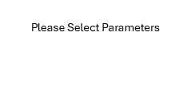

Show outcomes near first TBA as a function of metabolic and other parameters
Select X axis parameter (Metabolic, etc):
Adiponectin % Change Near first TBA
Adiponectin_TBAProx_PctCh_PctChange_TL
Alkaline_Phosphatase_TBAProx
Alkaline_Phosphatase_TBAProx_PctCh
Amylase_TBAProx
Amylase_TBAProx_PctCh
Creatinine_TBAProx
Creatinine_TBAProx_PctCh
Glucose_TBAProx_PctChange_TL
Glucose_TBAProx_PctCh_PctChange_TL
HbA1c_TBAProx
HbA1c_TBAProx_PctCh
HDL_Cholesterol_TBAProx
HDL_Cholesterol_TBAProx_PctCh
IL_5_TBAProx
IL_5_TBAProx_PctCh
IL_10_TBAProx
IL_10_TBAProx_PctCh
Insulin_TBAProx
Insulin_TBAProx_PctCh
LAR_TBAProx
LAR_TBAProx_PctCh
LDL_Cholesterol_TBAProx
LDL_Cholesterol_TBAProx_PctCh
Leptin_TBAProx
Leptin_TBAProx_PctCh
Total_Cholesterol_TBAProx
Total_Cholesterol_TBAProx_PctCh
Triglycerides_TBAProx
Triglycerides_TBAProx_PctCh
Weight_TBAProx
Weight_TBAProx_PctCh
Select Y axis parameter (Outcomes):
PctChange_TL_AtFirstTBA
AbsValue_TL_AtFirstTBA
Largest % Change, target lesion diameters
Lowest % Change, target lesion diameters
Best Response
Swimmer's plot duration (off trial patients only)
Swimmer's plot duration (all patients)
